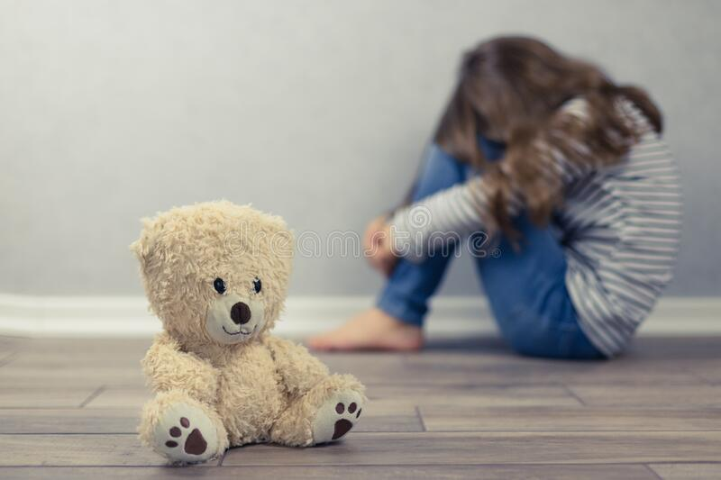

.jpg)
Here we care about your child's mental health and how to make him happy and self-confident
Here are some key points about psychological health for children:
1-Emotional regulation: As children grow, they learn how to manage their emotions and respond to stressful situations in appropriate ways. This helps build resilience and coping skills.
2-Socialization: Children at this age start playing with other kids more and develop friendships. They learn how to share, take turns, and communicate their needs effectively.
3-Self-awareness: Children begin to understand their own thoughts and feelings, which helps them develop a sense of identity. They also become more aware of others' perspectives.
4-Language development: At this age, children's vocabulary and grammar rapidly expand, allowing them to express themselves more clearly and understand others better.
5-Play-based learning: Young children learn through play, so it's important to provide opportunities for imaginative and creative play that stimulates their curiosity and problem-solving abilities.
6-Parental support: Children benefit from supportive caregivers who provide positive reinforcement, praise, and affection. Parents can also help their children develop healthy habits like regular exercise, good nutrition, and sufficient sleep.
Overall, these early years are crucial for setting the foundation for children's future psychological health and well-being.
.jpg)
7. Developing social relations:
Social relationships are also important for promoting a child's psychological health. Having friends and keeping in touch with friends and loved ones can boost a child's mental and emotional health.
8. Promote healthy family relationships:
The relationship children have with their parents is vital, but it is not the only relationship that matters to them. A healthy child will have many relationships with other family members, such as grandparents and cousins, as well as with friends and neighbors
9. Spend quality time with your child.
One of the ways to enhance a child's mental health is to play with him and spend quality time with him. Spend some quality time with your child away from the stress of work and play with your child. Some studies have shown that
Engaging in healthy play can go a long way in increasing a child's happiness rate and reducing chances of depression and anxiety. Plus, laughing and playing together are great stress relievers for you and your baby. It is also a great way to forget about the challenges of life for a while and just enjoy each other.
Engaging in healthy play can go a long way in increasing a child's happiness rate and reducing chances of depression and anxiety. Plus, laughing and playing together are great stress relievers for you and your baby. It is also a great way to forget about the challenges of life for a while and just enjoy each other.
10. Providing a safe school environment:
Also provide a positive and safe school environment. Feeling safe is critical to students' learning and psychological well-being. Reinforce positive behaviors such as respect, responsibility, and kindness. And prevent negative behaviors such as bullying and harassment. Introduce easy-to-understand codes of conduct and fair discipline practices and ensure an adult is present in areas where children congregate such as hallways, cafeterias, locker rooms and playgrounds. Teach children to work together to confront a bully, and encourage them to connect with introverted peers.
11. Encourage helping others:
Kids need to know they can make a difference. So adopting prosocial behaviors increases self-esteem, enhances bonding, promotes personal responsibility, and provides opportunities to want to help others and participate in enhancing being part of the community.
12. Encourage good physical health:
Good physical health supports good mental health. Healthy eating habits, regular exercise and adequate sleep protect children from the stress of difficult situations. Regular exercise also reduces negative emotions such as anxiety, anger and depression.
A healthy diet and a good night's sleep also have a significant impact on a child's mental health.

Some of the most common mental health problems in children include:
It is important to recognize mental health problems as soon as
they arise,so they can be easily treated and not worsen over time.
However, it is essential to differentiate between whether the child is suffering
from a serious problem that requiresintervention, or if it is a temporary
change in behavior due to daily pressures, such as the arrival of a new child in
the family or going to a new school. If you notice changes in your child's appetite,
symptoms of social withdrawal, pathological anxiety and fear of things they
did not previously fear,involuntary urination, repeated thoughts of death or self-harm,
then intervention is necessary and you should visit specialists.
Promoting Children's Mental Health:
Most parents care about their children's physical health, and are keen on visiting doctors, getting vaccinations, feeding them healthy food, and ensuring their academic development... but they often neglect the mental and psychological health of their children.
Children's mental health starts when parents care about their own mental health. To create a healthy psychological environment for your child, you must first take care of your own mental health.
You are a role model for your child. Children learn from you how to deal with stressful situations and anxiety. By observing you taking time to relax and practicing ways to cope with stress and tension, be an example and a positive model in dealing with situations that cause stress and nervousness.
The consequences of not addressing mental health problems in parents:
When you fail to pay attention to mental health problems and do not address them, the following may occur:
Your children may become more vulnerable to mental health issues.
Family life may become inconsistent and disturbed.
It can also affect your ability to discipline your children and may strain your relationship with your partner or other family members.
All of this may have a negative impact on your child's mental and overall health.